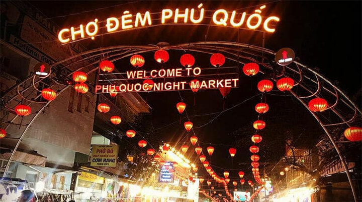
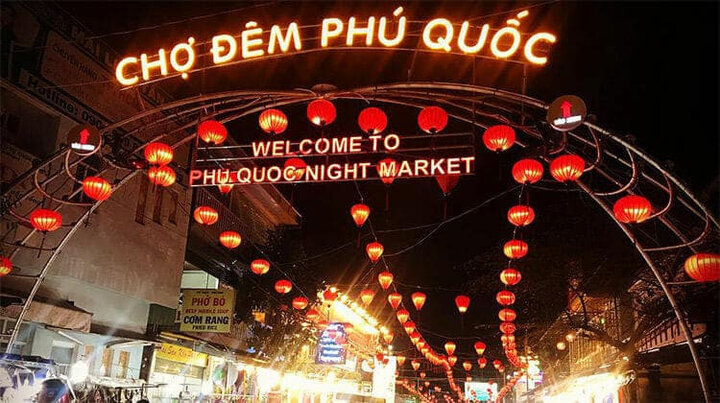

Giới thiệu
Phú Quốc – hòn đảo lớn nhất Việt Nam, được mệnh danh là Đảo Ngọc với biển xanh ngọc bích, cát trắng mịn và hệ sinh thái san hô rực rỡ. Đây là điểm đến lý tưởng cho nghỉ dưỡng, khám phá thiên nhiên và tận hưởng không khí trong lành hiếm có.
Du khách có thể trải nghiệm lặn ngắm san hô, tham quan làng chài, ngắm hoàng hôn trên biển hoặc vui chơi tại tổ hợp giải trí VinWonders – Safari Phú Quốc.
Lịch trình chi tiết
• Ngày 1: Tham quan Bãi Sao – Cáp treo Hòn Thơm – Làng chài Hàm Ninh • Ngày 2: Lặn ngắm san hô – Công viên chủ đề VinWonders – Safari Phú Quốc • Ngày 3: Khám phá chợ đêm – Thưởng thức hải sản – Mua đặc sản
Hình ảnh tour
 

Đặt Tour Phú Quốc
Hãy để lại thông tin, chúng tôi sẽ liên hệ ngay cho bạn. Giá trọn gói chỉ 2.999k.